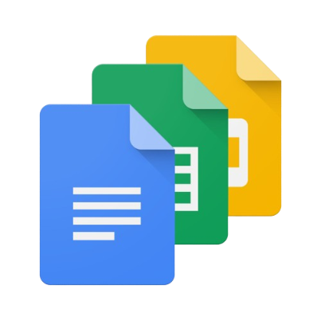

For more information, click on this image 
Programming languages are a fundamental part of computer science and software development. They provide a means for programmers to write instructions that a computer can understand and execute. Here are some key details about programming languages:
1. What Is a Programming Language?
A programming language is a formalized way of communicating with a computer. It consists of a set of rules and syntax that allows programmers to write code to perform various tasks and computations.
2. Types of Programming Languages:
3. Syntax and Semantics:
Each programming language has its own syntax (rules for writing code) and semantics (meaning of the code). Learning the syntax and semantics of a language is essential for effective programming.
4. Development Environments:
Programmers use Integrated Development Environments (IDEs) or text editors to write and manage code. IDEs often provide features like code highlighting, debugging tools, and project management.
5. Compilation vs. Interpretation:
Some programming languages are compiled, meaning the code is translated into machine code before execution (e.g., C, C++). Others are interpreted, with code being executed line by line by an interpreter (e.g., Python, JavaScript).
6. Libraries and Frameworks:
Most programming languages have libraries and frameworks that provide pre-written code and functionalities to streamline development. For example, Python has the NumPy library for numerical computing
7. Learning and Mastery:
Learning a programming language involves understanding its syntax, data structures, control flow, and libraries. Mastery comes with practice and experience.
8. Application Areas:
Programming languages are used in a wide range of applications, including web development, mobile app development, data analysis, artificial intelligence, game development, and more.
9. Choosing a Language:
The choice of programming language depends on the specific project, goals, and personal preferences. Some languages are better suited for certain tasks than others.
10. Evolution:
Programming languages continue to evolve with new versions and features. Developers should stay updated with the latest trends and best practices in the programming community.
Overall, programming languages are essential tools for creating software and solving complex problems in the digital age. The choice of language depends on the project's requirements and the programmer's familiarity with a particular language.
".NET" (pronounced "dot net") is not a programming language; instead, it's a software framework developed by Microsoft. ".NET" stands for the ".NET Framework" or ".NET Core," and it provides a platform for developing and running various types of applications, including desktop applications, web applications, and more. Within the .NET ecosystem, multiple programming languages can be used to write code. Here are some details about .NET:
1. .NET Framework vs. .NET Core vs. .NET 5 and Later:
The ".NET Framework" was the initial version of the framework for Windows-based applications.
".NET Core" was introduced as a cross-platform and open-source version of .NET. It was designed to work on Windows, macOS, and Linux.
".NET 5" and later versions (such as .NET 6, .NET 7, etc.) represent the unified platform that merges the best features of .NET Framework and .NET Core. It is cross-platform, open-source, and designed to be a single platform for various types of applications.
2. Programming Languages in the .NET Ecosystem:
The .NET ecosystem supports multiple programming languages. Some of the most commonly used languages include:
3. Application Types:
.NET can be used to develop a wide range of applications, including:
4. Development Tools:
Visual Studio is the primary integrated development environment (IDE) for .NET development, although there are also cross-platform alternatives like Visual Studio Code available.
5. Open Source:
With the introduction of .NET Core, Microsoft made a significant shift towards open source and cross-platform development. This has led to greater community involvement and support on non-Windows platforms.
6. Compatibility:
.NET 5 and later versions aim to provide a high degree of compatibility with existing .NET Framework and .NET Core applications, making it easier to migrate and upgrade older projects.
In summary, .NET is a versatile and widely used software framework developed by Microsoft. It supports multiple programming languages and can be used to build a variety of applications for different platforms. C# is the most common language used in the .NET ecosystem, but developers can choose the language that best suits their needs and preferences.
Angular is a popular open-source web application framework maintained by Google and a community of developers. It's used for building dynamic, single-page web applications (SPAs) and offers a comprehensive set of tools and features for front-end development. Here are some key details about Angular technology:
1. TypeScript:
Angular is built using TypeScript, which is a statically-typed superset of JavaScript. TypeScript helps developers catch errors at compile-time, provides better code navigation and autocompletion, and enhances the overall maintainability of large-scale applications.
2. Component-Based Architecture:
Angular applications are built using a component-based architecture. Components are reusable building blocks of the application that encapsulate the logic and UI of a specific part of the web page. Each component has its own HTML template, CSS styles, and TypeScript code.
3. Directives:
Angular provides powerful directives that extend HTML with additional functionality. For example, the ngIf and ngFor directives are commonly used for conditional rendering and iterating over data in templates.
4. Dependency Injection:
Angular includes a built-in dependency injection system, which makes it easier to manage dependencies and promote modularity in your application. This allows for the creation of reusable and testable components.
5. RxJS:
Angular heavily relies on RxJS (Reactive Extensions for JavaScript) for handling asynchronous operations, such as HTTP requests and event handling. Observables, provided by RxJS, are used to manage and work with streams of data.
6. Routing:
Angular offers a robust router that enables the creation of multi-page-like experiences within a single-page application. Developers can define routes and associated components, enabling navigation and deep linking.
7. Forms:
Angular provides powerful form handling capabilities, including template-driven forms and reactive forms (also known as model-driven forms). These features simplify form creation, validation, and submission.
8. Services:
Services in Angular are responsible for providing common functionality and data-sharing among components. They are typically used to encapsulate data access, communication with APIs, and other business logic.
9. Angular CLI:
The Angular Command Line Interface (CLI) is a powerful tool that simplifies project setup, development, and deployment tasks. It provides generators for components, services, and modules, as well as commands for building and serving applications.
10. Cross-Platform:
Angular allows you to build web applications that can run on various platforms, including web browsers, mobile devices, and desktop applications. Technologies like NativeScript and Ionic enable the development of mobile apps using Angular.
11. Testing:
Angular has a strong focus on testing, and it provides support for unit testing and end-to-end testing using tools like Jasmine and Protractor.
12. Community and Ecosystem:
Angular has a large and active community, with a wealth of resources, tutorials, and third-party libraries available to support developers.
13. Version Updates:
Angular follows a predictable release schedule with major version updates, ensuring that developers have access to the latest features and improvements.
Angular is a versatile and powerful framework that's widely used in modern web development. It's particularly well-suited for building complex, data-driven web applications and SPAs. Developers interested in using Angular can get started by exploring official documentation and tutorials available on the Angular website.
Java is a widely-used, high-level, and versatile programming language and platform. Developed by Sun Microsystems (now owned by Oracle Corporation) in the mid-1990s, Java has become one of the most popular and enduring programming languages. Here are some key details about Java technology:
1. Object-Oriented Programming:Java is a strongly object-oriented language, emphasizing the use of objects and classes to structure and build software. It follows the principles of encapsulation, inheritance, and polymorphism.
Java is known for its "write once, run anywhere" capability. It achieves platform independence through the use of the Java Virtual Machine (JVM), which allows Java programs to run on any device or operating system with a compatible JVM.
Java source code is first compiled into bytecode, which is a platform-neutral intermediate representation. This bytecode is then executed by the JVM at runtime, making Java both compiled and interpreted.
Java includes features like strong type checking, exception handling, and memory management, making it a robust language that helps prevent common programming errors.
It also has built-in security features to protect against malicious code, such as sandboxing and classloaders.
Java provides built-in support for multi-threading, allowing developers to create concurrent applications that can perform tasks simultaneously.
Java comes with a comprehensive standard library (Java Standard Library or Java API) that provides pre-built classes and methods for a wide range of tasks, such as file I/O, networking, and data manipulation.
Java has a large and active developer community, contributing to its extensive ecosystem of libraries, frameworks, and tools. Notable examples include the Spring Framework, Hibernate, and Apache Maven.
Java is used in various domains and application types, including web applications (Java EE), desktop applications (Java SE), mobile applications (Android), enterprise solutions, embedded systems, and more.
Developers often use popular IDEs like Eclipse, IntelliJ IDEA, and NetBeans for Java application development.
Java's versatility, portability, and strong support from the developer community have contributed to its continued popularity and widespread use in various domains, making it a go-to choice for many software development projects.
Structured Query Language (SQL) is a domain-specific language used for managing and querying relational databases. SQL databases are widely used in various applications and systems for storing, managing, and retrieving structured data. Here are some key details about SQL database technology:
1. Relational Databases:SQL databases are based on the relational model of data, which represents data in structured tables with rows and columns. Each table is also referred to as a relation.
SQL serves as the language for defining, manipulating, and querying relational databases. It includes various statements for tasks like creating tables, inserting data, updating records, and retrieving information.
SQL databases enforce data integrity rules, including constraints such as UNIQUE, NOT NULL, and CHECK constraints, to maintain the quality and consistency of data.
SQL provides a powerful querying capability, allowing users to retrieve data from one or more tables using SELECT statements. Queries can filter, join, aggregate, and sort data as needed.
To improve query performance, SQL databases often use indexes, which are data structures that allow for faster data retrieval based on specific columns.
SQL databases support transactions, which are sequences of one or more SQL operations that are treated as a single unit of work. Transactions ensure data consistency and integrity.
SQL databases adhere to ACID properties (Atomicity, Consistency, Isolation, Durability) to guarantee the reliability of transactions, even in the face of system failures.
There are many SQL database management systems available, including:
SQL databases play a crucial role in the storage and retrieval of structured data, making them a foundational technology in the world of data management and application development. They are known for their reliability, consistency, and strong support for complex querying and data manipulation tasks.